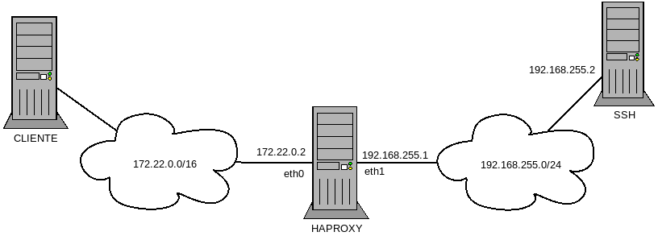

4.5.6. Aspectos adicionales¶
4.5.6.1. Transferencia de ficheros¶
El protocolo SSH permite también la transferencia de ficheros entre cliente y servidor. Aunque puede configurarse de modo que sustituya perfectamente a un servidor FTP, por ahora nos limitaremos a usar la configuración predeterminada y ver los clientes que nos permiten esta tarea.
La primera forma de aprovechar las posibilidades de transferencia es usar una herramienta de copia remota (scp proporcionada por openssh o pscp.exe de la suite de putty). El modo de usarlo es muy semejante al de la orden cp del mundo unix:
$ scp /path/local/fichero.txt usuario@servidor:path/en/el/servidor
es decir, un origen (en este caso un fichero del cliente) y un destino que se expresa como al conectarnos con el cliente ssh seguido de dos puntos. Si la ruta en el servidor es relativa se sobreentiende que lo es respecto al directorio peronal del usuario. Si no se expresa ruta alguna, el fichero se copiará en el directorio personal. En el ejemplo, el origen es local y el destino remoto, por lo que la consecuencia es que subimos el fichero al servidor. Para descargar no hay más que escoger un origen remoto y un destino local[1]:
$ scp usuario@servidor:fichero_remoto.txt .
La segunda forma de transferir ficheros es usar un cliente [s]ftp, similiar al cliente del FTP tradicional. openssh proporciona sftp, y putty su equivalente psftp
$ sftp usuario@servidor
sftp> put fichero_local
sftp> get fichero_remoto
Algunos clientes gráficos de FTP como filezilla, soportan también el protocolo sFTP.
Nota
Tanto scp como sftp hacen uso de la
configuración contenida en ~/.ssh/config, por lo que podremos
aprovechar las conexiones con nombre que hayamos creado en él.
El tercer método para tranferir ficheros en sistemas unix es montar algún directorio remoto del servidor en el cliente gracias a sshfs:
$ sshfs usuario@servidor: /tmp/ssh
De este modo, podremos traer y llevar ficheros de modo transparente haciendo uso de las herramientas habituales (cp, mv, etc). Para desmontar el fichero (si no somos el administrador) puede hacerse:
$ fusermount -u /tmp/ssh
4.5.6.2. Trampolín de acceso¶
Un servidor SSH puede usarse como trampolín de acceso a servicios inaccesibles, bien porque se encuentran en máquinas que no son accesibles desde internet, bien porque, aunque lo sean, tengamos restringido su acceso.
El método más simple y universal es establecer un túnel dinámico, tal como se explicó anteriormente.
Para el caso particular de que queramos acceder a un servidor SSH inaccesible a través de otro servidor SSH que sí es accesible podemos usar ProxyCommand:
$ ssh -o "ProxyCommand ssh usuario1@servidor_accesible nc -q0 %h %p" usuario2@servidor_inaccesible
En este caso, antes de que el cliente ssh intente cualquier comunicación, usamos otro cliente que accede al servidor accesible y ejecuta netcat para enchufarnos al servicio SSH del inaccesible. netcat nos ofrece acceso crudo a tal servicio lo cual es precisamente lo que necesitamos porque tenemos un cliente ssh esperando iniciar una conexión.
El único pero de este método es que necesitamos que el servidor accesible tenga instalado netcat. Sin embargo, a partir de la versión 5.4 del cliente, ssh tiene la opción
-W, que sirve para suplir el papel de netcat:$ ssh -o "ProxyCommand ssh -W %h:%p usuario1@servidor_accesible" usuario2@servidor_inaccesible
Con putty podemos hacer otro tanto, sabiendo que entre los programas de la suite de putty está plink que es la versión en línea de comandos del propio putty. De este modo, podemos configurar el programa así:


El comando es análogo al usado con ProxyCommand en ssh:
C:\path\a\plink.exe %user@%proxyhost -nc %host %portPor hacer
Y, sin embargo.., no funciona.
4.5.6.3. Redes restringidas¶
Lo explicado bajo el epígrafe anterior, presupone que, desde la red local, disponemos de acceso a un servidor SSH. Sin embargo, es común encontrarse con redes con políticas de acceso muy restrictivas a internet, en las que prácticamente el único tráfico saliente permitido es el de navegación web (HTTP y HTTPs). En estos caso, la única solución pàra poder burlar la restricción es preparar nuestro servidor SSH para que se pueda acceder a él a través de uno de los dos puertos anteriores (nosotros usaremos el 443[2]). Ahora bien, dependiendo de los servicios adicionales que ofrezcamos en el servidor y de las restricciones de la red del cliente, la solución será más o menos inmediata. Las posibles situaciones son las siguientes:
| Puerto [443] | Vigilancia | Estrategia |
|---|---|---|
| Libre | No | escucha en el puerto 443 |
| Ocupado | No | sslh |
| Libre | Sí | haproxy |
| Ocupado | Sí | haproxy |
Nota
Entiéndase que por libre entendemos que en nuestro servidor no usamos el puerto 443 para dar ningún otro servicio. Este será el caso si no ofrecemos servicio web seguro o si no necesitamos encauzar a través de este mismo puerto otros servicios como una VPN.
Por vigilancia entendemos que el tráfico de salida de la red cliente no solamente está restringido por un cortafuegos, sino que además hay un proxy que analice el protocolo del tráfico dirigido al puerto 443 y lo rechaza si éste no es TLS.
4.5.6.3.1. Puerto libre sin vigilancia¶
Es la situación menos restrictiva y, por tanto, la más fácil de solucionar, ya
que basta con hacer escuchar el servidor también en el puerto 443. Para ello
no hay más que usar repetidamente la directiva Port en /etc/ssh/sshd_config:
Port 22
Port 443
4.5.6.3.2. Multiplexación¶
Cuando el puerto 443 ya lo tenemos ocupado con el servidor web, o bien, prevemos que lo tendremos ocupado, la solución anterior es inviable. La solución sencilla en este caso consiste en poner a escuchar el servidor web seguro exclusivamente en el puerto 443 de la interfaz de loopback y reservar el puerto de la interfaz física para el servicio SSLH. Este servicio es, por decirlo así, un multiplexor de protocolos que analiza el trafico recibido en un determinado puerto (típicamente el 443), analiza el tráfico y, en función de su tipo, lo redirige al puerto de la interfaz que le indiquemos. Gracias a ello, podemos ofrecer distintos servicios (p.e. HTTPs, SSH y VPN) por el mismo puerto 443 de la interfaz física. La estrategia, pues, consiste en levantar los siguientes servicios, escuchando en los siguientes interfaces y puertos:
| Servicio | Interfaz | Puerto |
|---|---|---|
| SSH | 0.0.0.0 | 22/TCP |
| OpenVPN[3] | 0.0.0.0 | 1194/TCP |
| HTTPs | 0.0.0.0 | 80/TCP |
| SSLH | Todas excepto local | 443/TCP |
Para llevarlo a cabo, es necesario instalar:
# apt-get install sslh
y configurar el fichero /etc/default/sslh del siguiente modo:
RUN=yes # SSLH corre permanentemente, no a través de inetd.
[...]
DAEMON_OPTS="--user sslh --listen 172.22.0.2:443 \
--ssh 127.0.0.1:22 --ssl 127.0.0.1:443 --openvpn 127.0.0.1:1194 \
--pidfile /var/run/sslh/sslh.pid"
esto suponiendo que tengamos una sólo interfaz física y esta tenga por ip
172.22.0.2. Si hubiera varias, habría que colocar varias veces la opción
--listen con la ip correspondiente.
Nota
Permitir es tráfico VPN es absolutamente accesorio. Como cuesta poco (una opción para sslh) se ha incluido en la explicación.
4.5.6.3.3. SSH sobre HTTPs¶
En este último caso, un proxy intermedio analiza si el tráfico que intentamos dirigir hacia un puerto 443 sigue el protocolo TLS, como en teoría debería ser[4]. Ante esto, no podemos usar ninguna de las soluciones anteriores, porque en ellas el tráfico SSH viaja desnudo y éste no usa la cobertura TLS que espera encontrar el proxy. Ahora bien, TLS es una envoltura que cifra todo el contenido, lo que significa que tal proxy es incapaz de saber a qué protocolo envuelve TLS. Por tanto, para el proxy no hay diferencia entre una comunicación HTTP envuelta en TLS (o sea, HTTPs) o una comunicación SSH envuelta en TLS[5][6].
Esta estrategia requiere que en el puerto 443 no escuche un simple multiplexor, sino un proxy. Para la ocasión, usaremos el programa haproxy[7] y supondremos que todos los servidores para los que intermedia se encuentran en la misma máquina.
4.5.6.3.3.1. Servidor¶
Advertencia
El presente epígrafe describe cómo configurar exclusivamente haproxy y ssh (servidor y cliente). Su uso, sin embargo, determina que otros servicios para los que también intermedia (como HTTP o VPN) deban modificar asimismo sus configuraciones en el lado cliente o servidor para adaptarse. Lea, al respecto, los epígrafes correspondientes a su uso con nginx o su uso con openvpn.
haproxy es, en realidad, una solución bastante general y, no permite sólo envolver el protocolo interno para hacerlo invisible al proxy, sino también usarlo a la manera de un multiplexor como sslh [8], de modo que los protocolos (SSH, VPN) viajen sin envolver y, al llegar a haproxy sean identificados y redirigidos al verdadero servidor.
Describiremos dos soluciones distintas:
Una en la que todos los protocolos HTTP. SSH y VPN van encapsulados con TLS y es el propio haproxy el que los desencapsula, los reconoce y los envía al servidor correspondiente.
Otra en que junto a tráfico TLS, se permite que SSH y VPN circulen sin encapsular, de manera que al llegar el tráfico a haproxy se manda a sus respectivos servidores. El tráfico TLS, por su parte, se desemcapsula como en el caso anterior para comprobar si es HTTP, SSH y VPN y, reconocidos, se reenvían al servidor correspondiente.
En este segundo caso, la configuración permite enviar encapsulado o no el tráfico SSH y VPN según el grado de restricción de la red remota. Tenga en cuenta que encapsular este tráfico, que ya es tráfico seguro, sólo tiene por finalidad engañar a los proxies intermedios pero a costa de reducir el rendimiento de la conexión (ya que la cobertura TLS ocupa espacio) y, además, consume recursos del procesador al tener que cifrar y descifrar una capa extra.
Nota
Obsérvese que todo esto exige incorporar capaz intermedias a la comunicación con el consiguiente coste en el rendimiento.
Antes de entrar a configurar, es necesario instalar:
# apt-get install haproxy
y tener un certificado digital para el servicio, que puede ser autofirmado o acreditado por una autoridad certificadora (véase cómo obtener uno)[9].
Sea como sea, es preciso señalar que haproxy requiere que todas las claves públicas y la privada participantes en la autenticación estén reunidas en un mismo fichero.
En el caso de un certificado autofirmado, muy probablemente tendremos que hacer algo así:
# cat /etc/ssl/{private/ssl-cert-snakeoil.key,certs/ssl-cert-snakeoil.pem} > /etc/haproxy/keycert.pem
# chmod 600 /etc/haproxy/keycert.pem
y en el caso de haber usado letsencrypt, si no hemos creado un gancho de postinstalación como se sugirió en las explicaciones:
# cat /etc/letsencrypt/live/mi.servidor.org/{fullchain,privkey}.pem > /etc/haproxy/keycert.pem
# chmod 600 /etc/haproxy/keycert.pem
Creado el certificado adecuado, podemos hacer la configuración propiamente dicha, que es bastante más complicada y con muchísimas más variantes que la de sslh.
Primera variante
En ella, haproxy recibe tráfico cifrado con TLS, los descifra y,
dependiendo de su naturaleza, lo envía al servidor adecuado. Bajo estos
presupuestos la configuración en /etc/haproxy/haproxy.cfg queda así:
global
# directivas que trae ya el fichero
tune.ssl.default-dh-param 2048
default
# directivas que trae ya el fichero
frontend ssl
bind *:443 ssl crt /etc/haproxy/keycert.pem
mode tcp
option tcplog
tcp-request inspect-delay 5s
tcp-request content accept if { req.ssl_hello_type 1 }
acl ssh_request payload(0,7) -m bin 5353482d322e30
use_backend http if HTTP
use_backend ssh if ssh_request
use_backend vpn if !{ req.ssl_hello_type 1 } !{ req.len 0 }
backend ssh
mode tcp
timeout 2h
server ssh 127.0.0.1:22
backend vpn
mode tcp
timeout 2h
server openvpn 127.0.0.1:1194
backend http
mode http
option forwardfor
reqadd X-Forwarded-Proto:\ https
server nginx 127.0.0.1:80
Las claves de esta configuración son las siguientes:
- Las cláusulas frontend definen las conexiones con el cliente y las cláusulas backend las conexiones con los servidores, de lo que se deduce que haproxy escucha en el puerto 443 de la interfaz real (se ha supuesto que su ip es 172.22.0.2); y conecta con tres servidores: uno SSH, uno VPN y un web, todos en la propia máquina.
- Es justamente ahí donde se cifra a la salida y se descifra a la entrada
por lo que se añade el parámetro
ssly se indica cuál el certificado[10]. - Como consecuencia de que se descifra, es posible analizar el contenido y distinguir entre los tres tráficos[11].
- La conexión con el servidor web se hace en modo HTTP por la razón que
se dará más adelante. Por ello se envía la comunicación al puerto 80[12].Esto nos permite añadir los campos
X-Forwarder-Forpara indicar la ip del cliente y la cabeceraX-Forwarder-Protopara avisar de que el protocolo que usó el cliente fue HTTPs y no HTTP que es el que ve el servidor. Si se tiene convenientemente configurado el servidor web, las aplicaciones web podrán saber quién se conecta y cómo.
Advertencia
A diferencia de sslh, haproxy es un proxy y como tal establece dos conexiones distintas: una entre el cliente y él; y otra entre él y el servidor. Consecuentemente, el servidor destinatario final es incapaz de conocer cuál es la ip del cliente, y entenderá que se comunica siempre con la propia máquina local (o sea, 127.0.0.1), ya que haproxy está situado en la misma máquina. Esto, por ejemplo, nos impediría protegernos contra ataques de fuera bruta, cuando los ataques se dirigen al puerto 443, en vez de al 22. En el caso concreto de esta variante, no tiene excesiva importancia, ya que la conexión sólo es posible si se establece además un tunel SSH, lo cual es bastante improbable que intenten hacer estos atacantes chinos que hacen búsuqedas automáticas de servidores SSH en la red.
Nota
haproxy con la colaboración del núcleo de linux, puede funcionar en modo transparente, de manera que el servidor reciba la ip del cliente. Sin embargo, esto exige que el servidor se encuentre en una máquina distinta a haproxy. Por si es este nuestro caso, se deja un epígrafe específico para su explicación.
Segunda variante
Añade a la primera, la posibilidad de también conectarse al puerto 443 sin
necesidad de establecer el túnel TLS. Puede descargar el código de
este enlace.
Nota
Por el modo en que se ha realizado esta configuración del servidor (y tambiém la anterior), éste no necesita conocer de antemano de qué naturaleza es el tráfico escondido dentro de TLS, ya que antes de discriminar tal tráfico desencapsula. Como encapsulado, el tráfico está cifrado y es imposible conocer cuál es (esta es, precisamente, la base de que podamos burlar cualquier proxy), el protocolo TLS habilita una manera de que en la propia envoltura se indique el nombre del servidor: la extensión SNI.
Una manera de distinguir el tipo de tráfico es hacer que el cliente incluya un SNI distinto para cada tipo de tráfico y reconocer éste leyendo el SNI:
frontend main
bind 172.22.0.2:443 # No descriframos en absoluto.
mode tcp
option tcplog
tcp-request inspect-delay 5s
tcp-request content accept if { req_ssl_hello_type 1 }
acl ssh_request req_ssl_sni -i ssh.mi.servidor.org
acl vpn_request req_ssl_sni -i vpn.mi.servidor.org
use_backend ssl-ssh if ssh_request
use_backend ssl-vpn if vpn_request
default_backend http
Ahora bien, el tráfico sigue cifrado con TLS lo cual puede no ser un problema para el servidor web[13], pero sí para los otros servidores. Eso obligaría a que el backend (ssl-ssh o ssl-vpn en el ejemplo) no entregue directamente el flujo, sino que cada uno de ellos lo envíe a un puerto local particular en que escucha también haproxy y que sea en este frontend donde haproxy aplique el certificado para descifrar.
4.5.6.3.3.2. Cliente¶
UNIX
El cliente ssh requiere ayudarse de un software que con TLS envuelva su salida y desenvuelva su entrada, y esa labor la puede hacer openssl[14]:
$ ssh -p443 -o "ProxyCommand openssl s_client -quiet -connect %h:%p" usuario@mi.servidor.org
lo cual es un poco engorroso, así que es mejor dejarlo ya escrito en el fichero de configuración del cliente:
Hostname *servidor
Host mi.servidor.org
Username usuario
Port 443
Hostname ssl*
ProxyCommand openssl s_client -quiet -connect %h:%p
Nota
Obsérvese que, de este modo, cuando no necesitemos encapsular el tráfico podremos hacer:
$ ssh servidor
y cuando queramos encapsularlo:
$ ssh ssl-servidor
Nota
Si quiséramos enviar un SNI podríamos añadir a openssl la
opción -servername:
ProxyCommand openssl s_client -quiet -connect %h:%p -servername ssh.%h
Windows
Con putty es posible hacer su equivalente, pero como careceremos de
openssl, es necesario primero instalarlo. El modo más sencillo es
instalar la versión light que ofrece esta página, que no requerirá más que
vayamos aceptando los distintos pasos de instalación. Al término, tendremos un
ejecutable funcional en el directorio C:OpenSSL-Win32bin\.
Instalado, basta configurar putty de este modo:


esto es, configurar la sesión para conectarnos al puerto 443 del servidor
que en esta ocasión hemos llamado example.net. A continuación debemos escoger
Connection>Proxy, escoger un proxy de tipo local y usar
openssl para establecer el túnel del mismo modo en que lo usábamos
con ProxyCommand:
C:\OpenSSL-Win32\bin\openssl.exe s_client -connect %host:%port -quiet
4.5.6.3.3.3. Modo transparente¶
Es posible hacer que haproxy actúe como proxy absolutamente transparente, pero ello exige algo más que reconfigurarlo. Para empezar, hay dos condiciones:
- El servidor destino de las conexiones (SSH, web, etc.) debe estar en una máquina distinta de la que corre haproxy.
- La máquina con haproxy debe encontrarse en la ruta de salida de los servidores hacia los clientes. Esta exigencia se debe a que al actuar nuestro proxy de forma transparente, envía a los servidores como ip de origen de la comunicación la ip del cliente original. Por ello, la respuesta del servidor tendrá por destino la ip del cliente y, si el proxy no se interpone, llegará al cliente sin haber pasado otra vez por el proxy. Es preciso, pues, interponerse, capturar la respuesta y pasarla otra vez por haproxy.
Para ilustrarlo consideraremos el siguiente esquema:
que cumple con lo que decimos. La configuración exige:
La modificación de un par de parámetros del núcleo (en
/etc/sysctl/sysctl.conf):net.ipv4.ip_forward = 1 net.ipv4.ip_nonlocal_bind = 1
Nota
Si se quiere habilitarlos inmediatamente, se puede ejecutar:
# sysctl -pLa adición de reglas de encaminamiento y reglas de iptables[15]. Como suponemos que usamos debian, podemos hacerlas perennes, manipulando el fichero
/etc/network/interfacesy dejando así la configuración de la interfaz que conecta con la red en la que están los servidores:allow-hotplug eth1 iface eth1 inet static address 192.168.255.1/24 # Creamos la reglas up iptables -t mangle -A PREROUTING -i $IFACE -p tcp -m socket --transparent -j MARK --set-mark 111 up ip rule add fwmark 111 lookup 100 up ip route add local 0.0.0.0/0 dev lo table 100 # Y las destruimos down iptables -t mangle -D PREROUTING -i $IFACE -p tcp -m socket --transparent -j MARK --set-mark 111 down ip rule del fwmark 111 lookup 100 down ip route del local 0.0.0.0/0 dev lo table 100
Nota
Nótese que por razones de encaminamiento es bastante probable que necesitemos hacer enmascaramiento en la máquina router-proxy, así que la interfaz externa puede estar configurada así:
allow-hotplug eth0 iface eth0 inet static address 172.22.0.2/16 gateway 172.22.0.1 up iptables -t nat -A POSTROUTING -o $IFACE -j MASQUERADE down iptables -t nat -D POSTROUTING -o $IFACE -j MASQUERADE
La modificación (mínima) de la configuración de haproxy que implica:
Comentar en la sección global los líneas que impiden que haproxy se ejecute con premisos de administrador:
#user haproxy #group haproxy
Añadir a todos los servidores con los que se quiere actuar como proxy transparente una directiva más para que se envíen los paquetes utilizando la ip del cliente como origen:
backend ssh mode tcp source 0.0.0.0 usesrc clientip server ssh 192.168.255.2:22
Nota
En el supuesto de que clientes y servidores estén en la misma red, no tiene efecto colocar como puerta de enlace de los servidores el proxy para obligar a que la respuesta pase por él, De todos modos, aún puede hacer que la comunicación pase por él, manipulando el encaminamiento de los servidores. Suponiendo que la red sea la 192.168.255.0/24, y la ip del proxy la 192.168.255.10, podríamos configurar la interfaz de cada servidor, así:
allow-hotplug eth0
iface eth0 inet static
address 192.168.255.100/24 # La IP que deba tener el servidor.
gateway 192.168.255.1
up ip route add 192.168.255.0/24 via 192.168.255.10 metric 1 dev eth0
up ip route del 192.168.255.0/24 dev eth0
down ip route del 192.168.255.0/24 viua 192.168.255.10 metric 1 dev eth0
down ip route add 192.168.255.0/24 dev eth0
4.5.6.4. Persistencia de claves¶
Nota
Este apartado sólo tiene interés cuando se usan clientes linux.
Ya se ha dicho muy a la ligera que el cliente de openssh sólo permite la introducción de claves de manera interactiva, por lo que no hay opción que permita pasarla al programa ni tampoco se lee esta de la entrada estándar. Si optamos por el uso de certificados, podemos evitar la introducción de la contraseña dejando la clave de paso en blanco, pero eso hace que ante un robo de la clave privada, quedemos sin protección. Por otro lado, es posible que durante nuestra sesión en el cliente necesitemos repetidamente acceder al servidor y, en estos casos, será tedioso tener que estar repetidamente introduciendo la contraseña.
Para paliar este inconveniente tenemos dos soluciones distintas, ambas basadas en la autenticación con certificado y en hacer coincidir la contraseña del usuario local en el cliente con la clave de paso que desbloquea la clave privada.
Advertencia
Ambas soluciones exigen que la clave de paso sea la misma que la contraseña del usuario en el cliente, es decir, si en el cliente somos el usuario pepe con contraseña pepesoyyo, la clave de paso que debemos escoger al crear el certificado debe ser pepesoyyo.
4.5.6.4.1. ssh-agent¶
Este programa permite almacenar claves de paso que luego se usarán cuando sea necesario para desbloquear la clave privada. Su uso manual es el siguiente:
$ ssh-agent
SSH_AUTH_SOCK=/tmp/ssh-wuZYTNFc1wq1/agent.656; export SSH_AUTH_SOCK;
SSH_AGENT_PID=657; export SSH_AGENT_PID;
echo Agent pid 657;
Al arrancarlo devuelve su PID y el socket que usará para comunicarse con el resto de programas de ssh. Para que sea así, deben definirse como variables de ambiente las dos variables que se ven. De hecho, la salida es el código que lleva a cabo tal cosa, por lo que la mejor forma de poner en marcha el programa es así[16]:
$ eval $(ssh-agent)
Agent pid 660
de modo que directamente:
$ env | grep ^SSH
SSH_AUTH_SOCK=/tmp/ssh-K4lZOZ1jc1iQ/agent.659
SSH_AGENT_PID=660
Como ahora están definidas las variables de ambiente que identifican el ssh-agent encargado de gestionar claves, podemos usar ssh-add para añadir una:
$ ssh-add
Enter passphrase for /home/usuario/.ssh/id_ecdsa:
Identity added: /home/usuario/.ssh/id_ecdsa (/home/usuario/.ssh/id_ecdsa)
Introducida la clave de paso, ya podremos usar en esta terminal las herramientas de SSH (ssh, sftp, scp) sin necesidad de introducir clave alguna. Si cambiamos a otra terminal tendremos que definir y exportar las variables de ambiente anteriores (pero no volver a añadir la clave), para hacer accesible el agente a las aplicaciones.
Aunque lo anterior funciona sin problemas, puede seguir resultando algo engorroso; así que se le puede dar una vuelta de tuerca más e instalar:
# apt-get install libpam-ssh
Este es un módulo que está pensado para tomar la propia contraseña de
autenticación del usuario y usarla para arrancar ssh-agent y
desbloquear la clave privada almacenada en ~/.ssh/[17]. No requiere de
configuración adicional, porque la instalación se encarga de añadirlo a pam
convenientemente. Hecho esto, no tenemos más que asegurarnos de que tenemos
creado un certificado:
$ ssh-keygen -t ecdsa
en que la clave de paso coincide con la contraseña del usuario en el cliente (no con la contraseña del usuario remoto).
Nota
Desgraciadamente, el módulo pam_ssh no está disponible en buster, ya que no es compatible con la versión que usa ésta de openssl
Como alternativa al uso de pam_ssh, en los clientes con entorno gráfico puede
compprobarse[18] que está escrito lo siguiente en
/etc/X11/Xsession.options:
$ grep ssh /etc/X11/Xsession.options
use-ssh-agent
Esto provoca que al realizarse el login gráfico el entorno gráfico arranque
dentro de una sesión de ssh-agent, por lo que todas las terminales de
texto que abramos dentro de él, tendrán definidas las dos variables que lo
identifican. Por tanto, basta realizar un ssh-add para que a partir
de ese momento no requiramos introducir más claves de paso al acceder al
servidor. Para automatizar un poco el proceso, podemos añadir la siguiente línea
a .bashrc:
[ -n "$SSH_AGENT_PID" ] && { ssh-add -L > /dev/null || ssh-add; }
que provocará que se nos pida automáticamente la coontraseña al abrir la primera terminal.
Advertencia
El uso del módulo de pam es más adecuado, ya que el arranque del gestor de ventanas dentro del ambiente creado por ssh-agent hace que la definición de las dos variables de ambiente sólo exista dentro del entorno gráfico, por lo que si salimos de él a una terminal de texto pura, éstas no existen y tendremos que definirlas a mano. En cualquier caso, si el módulo de pam no puede usarse y se opta por esta segunda vía, no es necesario que la clave de paso coincida con la contraseña de usuario, ya que la clave se introduce a posteriori de forma independiente.
Nota
Más adelante, se propone cómo usar un script para emular el módulo pam_ssh si no disponemos en el sistema de él.
4.5.6.4.2. gnome-keyring¶
Por hacer
Por investigar…
4.5.6.5. Acceso no interactivo¶
Se ha expuesto bajo el epígrafe anterior cómo evitar tener que escribir constantemente la clave de paso, pero eso no da respuesta completa a cómo ejecutar de manera no interactiva un acceso por ssh; no, al menos, antes de que hayamos accedido al sistema y tenido oportunidad de escribir la clave, si es que optamos por usar ssh-agent y no disponemos del módulo pam_ssh.
Para poder hacer esto, es necesario saber que la variable SSH_ASKPASS le
indica a ssh (y toda la familia de programas clientes) qué programa
usar para obtener la contraseña. Por este motivo, si creamos el programa
$XDG_RUNTIME_DIR/askpass.sh[19]:
#!/bin/sh
cat
Podremos añadir la clave de paso a ssh-agent del siguiente modo:
$ echo "mi clave de paso" | SSH_ASKPASS=$XDG_RUNTIME_DIR/askpass.sh ssh-add
Pasar la clave de paso[20] directamente a ssh es algo más complicado y no resultará en una sesión interactiva (lo cual no es un problema, si el propio acceso pretendemos que sea interactivo):
$ echo "mi clave de paso" | SSH_ASKPASS=$XDG_RUNTIME_DIR/askpass.sh setsid ssh castillo ls /
Nota
Hay que hacer dos puntualizaciones a la orden anterior:
Se requiere que esté definida la variable de ambiente DISPLAY, que lo estará si estamos usando una terminal gráfica. Si no es el caso, podemos definirla con un valor cualquiera:
export DISPLAY=dummy:0Si no hemos accedido anteriormente al servidor, el acceso fallará porque no seremos capaces de aceptar la clave. Para evitarlo es necesario aceptarla autómaticamente añadiendo a ssh la opción
-o StrictHostKeyChecking=no
Lo anterior mostrará el contenido del directorio / del servidor.
Aplicación práctica
Todo esto tiene utlidad si se programa algún script, por ejemplo, uno que se ejecute con pam_exec y que nos haga las veces del módulo pam_ssh, por si definitivamente deja de ser efectivo en las versiones modernas de debian. Los principios del script son los siguientes:
- Al autenticarse, sólo si no hay sesiones abiertas para el usuario, el script
arranca ssh-agent, guarda los valores de
SSH_AGENT_PIDySSH_AUTH_SOCKen un fichero de ambiente y desbloquea la clave privada con ssh-add. - Al abrir sesión, se usa pam_env para hacer que las dos variables contenidas en el fichero sean variables de ambiente.
- Al cerrar sesión, si no hay otras sesiones abiertas por el usuario, se borra el fichero de ambiente y se mata ssh-agent.
El script es éste, que debe alojarse en
/usr/local/bin/. Para automatizar la manipulación de pam se incluye
este otro fichero, de manera que debemos hacer lo
siguiente:
# mv /path/donde/este/pam_ssh.sh /usr/local/bin
# mv /path/donde/este/pam-ssh /usr/share/pam-configs
# pam-auth-update
Para habilitar la acción del script debemos seleccionar el desbloqueo de claves SSH.
Nota
El script usa ssh-add sin argumentos, así que se
detectará la clave privada si esta tiene su ubicación predeterminada. Además,
se ejecuta para los servicios login, slim, lightdm, gdm, xdm y
kdm. Es posible escoger otros servicios, manipulando pam-ssh y
añadiendo a la dos líneas presentes en Auth y Auth-Initial:
optional pam_exec.so expose_authtok quiet /usr/local/bin/pam_ssh.sh
el parámetro start_if, cuyo valor debe ser todos los servicios para los que deseemos ejecutar el script separados por comas:
optional pam_exec.so expose_authtok quiet /usr/local/bin/pam_ssh.sh start_if=login,sshd,slim
Notas al pie
| [1] | Observe que: $ scp usuario@servidor:fichero{1,2}.txt .
y: $ scp usuario@servidor:"fichero{1,2}.txt" .
pretenden lo mismo: descargar los ficheros |
| [2] | El acceso por el puerto 443 ofrece la ventaja de que, en caso de que un proxy vigile el tráfico, no podrá más que comprobar que existe protocolo TLS y hacer algunas comprobaciones sobre éste (por ejemplo, la autenticidad del certificado del servidor), ya que el contenido encapsulado está cifrado y, consecuentemente, es totalmente opaco. Por contra, un proxy que vigile el puerto 80 puede acceder al contenido y ver que esas supuestas páginas son bastante raras. Si su filtrado también se basa en analizar el contenido, lo más probable es que no pasemos su filtro. |
| [3] | Donde queramos poner a escuchar openvpn depende de nuestras
intenciones. Escoger el puerto 1194 responde a que ese es el puerto
estándar para esa aplicación (de hecho, aparece referido en
|
| [4] | En teoría, el tráfico debe ser HTTPs, es decir, HTTP ofuscado e irreconocible gracias a la envoltura segura que ofrece TLS. |
| [5] | De lo que se deduce que el epígrafe es inexacto: debería llamarse SSH sobre TLS. |
| [6] | Como el proxy es capaz de ver la capa TLS, no solamente puede comprobar si se usa tal protocolo, sino también exigir la validez del certificado. En ese caso, no tendremos más remedio que generar un certificado válido. |
| [7] | También podría usarse el módulo mod_proxy de apache o squid. Desgraciadamente, no puede usarse como proxy nginx, ya que éste sólo funciona como proxy inverso. En realidad, nginx tiene un módulo de terceros que sí lo permite, ngx_http_proxy_connect, pero en el estado actual en que se halla la modularidad de nginx es un engorro utilizarlo. |
| [8] | Con una importante diferencia: se altera el origen de la conexión y el servidor creerá que las peticiones las recibe de haproxy (o sea, la máquina local) y del cliente original. Se discutirá más adelante. |
| [9] | Ahora bien, en la práctica deberemos usar un certificado fiable, porque si el motivo de usar haproxy es la existencia de un proxy, lo necesitaremos; y, si tal proxy no existe, es mejor usar una solución como sslh. |
| [10] | En el gancho propuesto el fichero con las claves no se llama keycert.pem, sino nombre_del_servidor.pem. Téngalo en cuenta a la hora de copiar la configuración de ejemplo. |
| [11] | Todo cliente debe empezar su comunicación con la cadena «SSH-2.0», que puesta en binario es el código hexadecimal escrito en la configuración. |
| [12] | Para profundizar en la configuración del servidor web, cuando es el proxy de cifrar y descifrar la comunicación, vea el apartado correspondiente. |
| [13] | En realidad sí lo es, porque no habrá forma de conocer el origen de la petición, a menos que, además, se configure haproxy en modo transparente. |
| [14] | Obviamente, este software de proxy para el cliente sólo es necesario si necesitamos establecer el túnel TLS. Si no es el caso (segunda variante en redes sin proxy que fiscalece la comunicación), en el cliente no hay más que asegurarse de que nos conectamos al puerto 443. |
| [15] | Esta configuración requiere que el núcleo se haya compilado con el módulo
# grep -i match_socket /boot/config-`uname -r`
CONFIG_NETFILTER_XT_MATCH_SOCKET=m
|
| [16] | Si antes queremos deshacernos del ssh-agent ya en ejecucion podemos hacer lo siguiente: $ export SSH_AUTH_SOCK=/tmp/ssh-wuZYTNFc1wq1/agent.656
$ export SSH_AGENT_PID=657
$ ssh-agent -k
o matarlo directamente, que es más rápido: $ kill -1 657
|
| [17] | Consúltese su página de manual para que la clave privada no sea una de
las predeterminadas de ssh (~/.ssh/id_rsa,
~/.ssh/id_ecdsa, etc.) |
| [18] | Si se usa pam_ssh (o el script sustitutorio después propuesto) conviene, precisamente, cerciorarse de que esto no está activo comentando la opción) |
| [19] | No se usa directamente cat porque ssh-add y el resto de programas pasan argumentos que lo malogran. El script desecha los argumentos y sólo atiende a la entrada estándar que es lo que interesa. |
| [20] | O la contraseña, no es necesario la autenticación mediante clave pública y privada. |